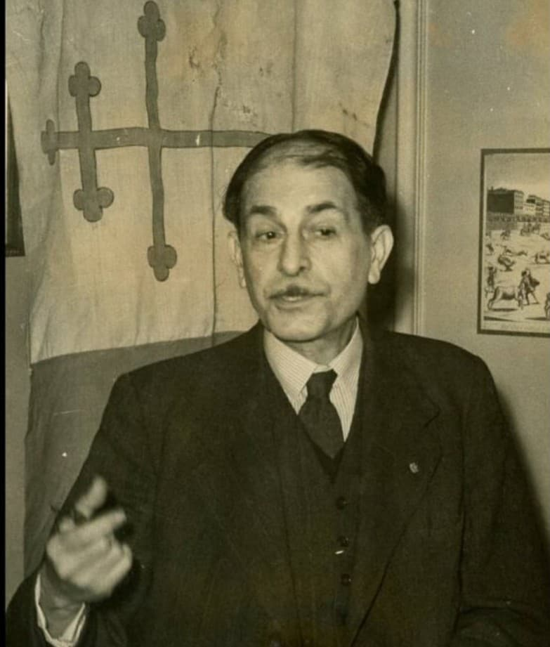

Le vice-amiral Émile Muselier est l’une des figures majeures de la France Libre. Dès juin 1940, il rejoint Londres et apporte à Charles de Gaulle un soutien militaire décisif. Fondateur des Forces Navales Françaises Libres (FNFL), il est également l’auteur du choix de la Croix de Lorraine comme emblème officiel de la France Libre. Son rôle est essentiel dans la structuration de la Résistance extérieure.

Né en 1882, Émile Muselier est un officier de marine brillant, formé dans la tradition navale française. Durant la Première Guerre mondiale, il se distingue par ses compétences stratégiques et son sens de l’organisation. En 1940, alors que la France s’effondre, Muselier refuse l’armistice et rejoint Londres pour continuer la lutte aux côtés des Britanniques.
À Londres, Muselier organise les premières unités navales qui refusent l’armistice : contre-torpilleurs, sous-marins, corvettes et navires marchands ralliés. Les FNFL participent à l’escorte des convois, aux opérations en Méditerranée, aux missions de renseignement et aux actions de libération. Muselier transforme une poignée de volontaires en une force navale crédible et respectée.
→ Voir la fiche FNFLEn juillet 1940, Muselier propose à Charles de Gaulle d’adopter la Croix de Lorraine comme emblème officiel de la France Libre. Héritière de la croix d’Anjou et associée à Jeanne d’Arc, elle symbolise la résistance, la foi et l’identité française. De Gaulle accepte immédiatement. La croix de Lorraine devient alors l’emblème des navires, des avions et des uniformes de la France Libre.
→ Lire la fiche Croix de LorraineMuselier est l’un des premiers officiers supérieurs à reconnaître De Gaulle comme chef de la France Libre. Leur relation est parfois marquée par des tensions, mais De Gaulle sait que Muselier est indispensable pour donner une structure militaire à la Résistance extérieure. Ensemble, ils posent les bases de la France Libre et de son identité.
1882 : Naissance à Marseille.
1914–1918 : Service actif durant la Première Guerre mondiale.
Juin 1940 : Refus de l’armistice, départ pour Londres.
Juillet 1940 : Création des FNFL et adoption de la Croix de Lorraine.
1940–1942 : Organisation des forces navales de la France Libre.
1965 : Décès à Toulon.